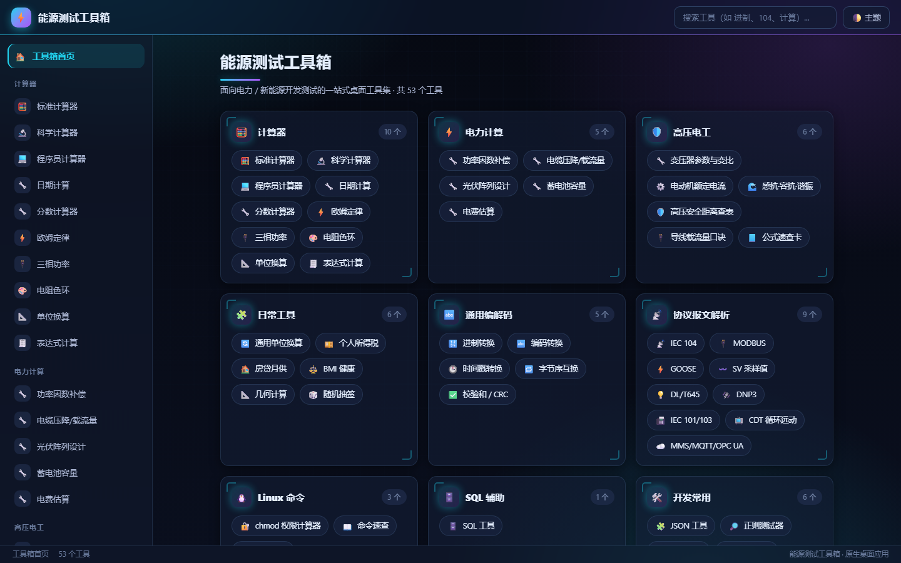
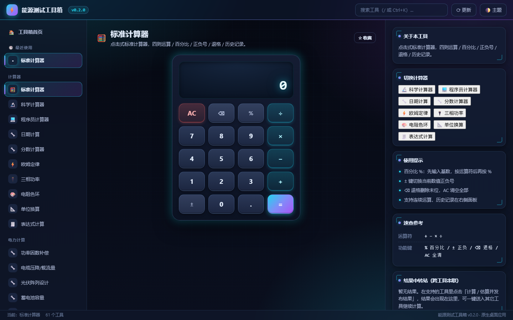
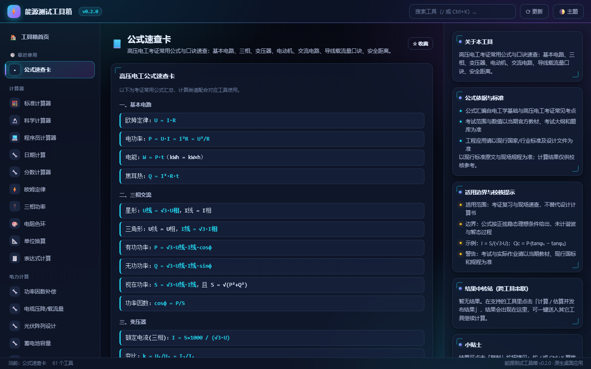
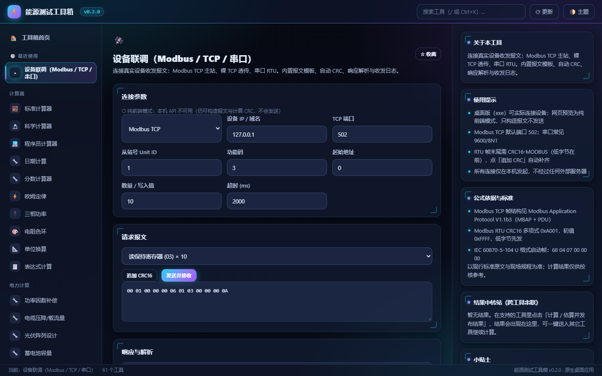
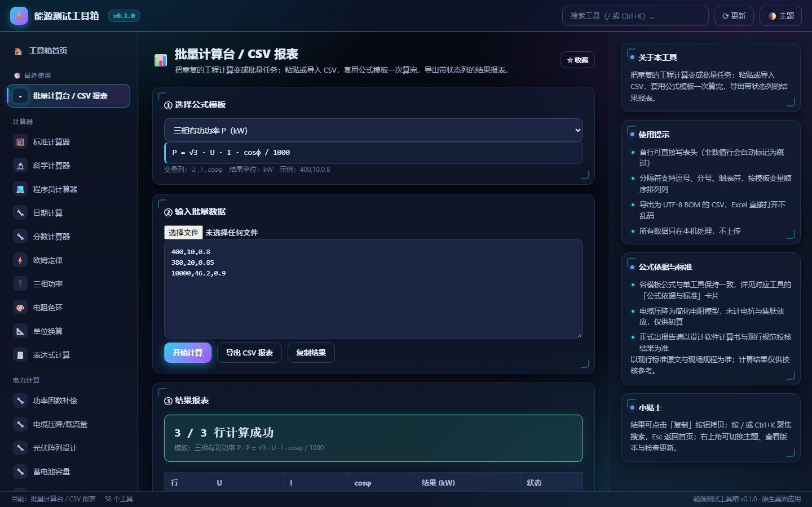
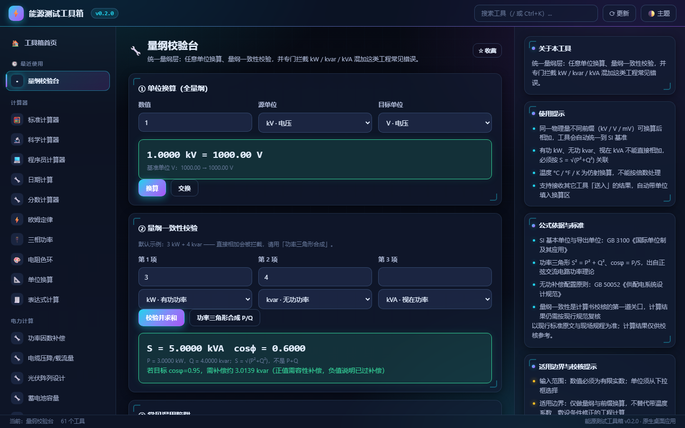

电力与新能源
开发测试工具箱
把日常要查的公式、要算的参数、要解的报文，全部收进一个桌面窗口。62 个工具 · 10 大分类，从标准计算器到 IEC 104 / MODBUS 报文解析，从高压电工考证公式到 JSON / 正则，打开即用，无需联网。

10 大分类，62 个工具
按真实工作场景组织，搜索框输入关键词即可直达任意工具。
计算器 10
标准 / 科学 / 程序员计算器，日期、分数、欧姆定律、三相功率、电阻色环、单位换算、表达式计算。
电力计算 5
功率因数补偿、电缆压降与载流量、光伏阵列设计、蓄电池容量、电费估算。
高压电工 7
变压器变比、电动机额定电流、感抗容抗与谐振、安全距离、载流量口诀、公式速查，以及带边界声明的工程标准数据表。
日常工具 6
通用单位换算、个税计算、房贷月供、BMI 健康、几何计算、随机抽签与掷骰。
通用编解码 5
进制转换、编码转换、时间戳、字节序互换、校验和 / CRC。
协议报文解析 10
IEC 104 / 101 / 103、MODBUS、GOOSE、SV、DL/T 645、DNP3、CDT、MMS / MQTT / OPC UA，以及可直连设备的 Modbus TCP / 串口联调。
Linux 命令 4
chmod 权限计算、命令速查与参数解析、crontab 表达式生成与执行时间推算。
SQL 辅助 3
常用 SQL 片段、语句格式化美化、多方言建表语句生成。
开发常用 6
JSON 格式化、正则测试、颜色转换、文本处理、Base64 / URL、密码生成。
综合工具 6
HEX 差异对比、HEX Dump、批量计算台与 CSV 报表导出，以及主题、备份与更新的「设置与备份」入口。
不翻页的双栏工作台
左侧主体操作，右侧面板承载说明、历史与速查，一屏看全。





以上为应用真实运行截图 · 深色 HUD 主题，右上角可循环切换「跟随系统 / 深色 / 浅色」；公式依据、适用边界与结果中转站显示在右侧面板
为现场与桌面而设计
不依赖浏览器标签页，不依赖网络，也不把数据发给任何服务器。
完全离线
前端资源通过 Go embed 打进二进制，内置 127.0.0.1 本地服务供 WebView 加载；常规功能零外网请求，仅主动检查更新时访问 GitHub。
绿色单文件
一个 exe 即可运行，免安装、无注册表写入；WebView2Loader.dll 已内嵌，拷贝带走即用。
双栏不翻页
固定高度网格布局，整页不纵向滚动；长内容拆到右侧面板，窄窗口自动折叠为单列。
全局搜索
顶栏搜索框按名称、描述、关键词实时过滤，输入「进制」「104」「计算」即可定位工具。
主题与字号
默认跟随系统深浅色，也可手动锁定深色 / 浅色；补齐键盘焦点环与减弱动效支持，计算器显示屏高对比设计。
声明式模块
每个工具是一个独立注册单元，新增功能只需注册并引入脚本，易于扩展与维护。
设备联调
桌面版内置本机 API，可直连设备收发 Modbus TCP / 裸 TCP / 串口 RTU 报文，含模板、自动 CRC 与收发日志。
批量报表
粘贴或导入 CSV，套用工程公式模板一次算完成百上千组数据，自动生成趋势曲线，可导出 CSV / Excel 与可打印 PDF 计算书。
可信计算
电力与电工工具统一标注公式依据、适用边界与参考标准，并配有数值标准答案回归测试。
量纲一致
统一量纲层覆盖 16 个单位族；kW / kvar / kVA 混加会被拦截，改按功率三角形 S = √(P²+Q²) 合成并给出 cosφ。
结果串联
结果中转站可把上次结果送入其它工具继续算，按量纲自动换算单位；Enter 触发计算，测试记录留在本机随时回看。
数据不丢
数据目录与文件名解耦，内置服务固定复用端口 39017，避免 localStorage 按随机端口换 origin；一键导出 / 导入全部本机数据，单实例拦截与窗口位置记忆。
更新可校验
桌面版自动挑本平台安装包，按 Release 的多平台 SHA256SUMS.txt 逐字节校验，校验失败立即删除；外链走 GitHub 域名白名单，绝不静默自替换。
双平台同源
Windows 走 Edge WebView2（纯 Go），macOS 走系统 WKWebView（Intel / Apple Silicon 通用 .app）；同一套嵌入前端与本机 API，功能与界面完全一致。
Go 壳 + 嵌入式前端
Windows 纯 Go 无 CGo；macOS 用系统 WKWebView 编译通用 .app。同一份前端由 CI 双平台构建发布。
# 一条命令构建 Windows 桌面应用 CGO_ENABLED=0 GOOS=windows GOARCH=amd64 \ go build -ldflags "-H windowsgui -s -w" \ -o EnergyTestToolbox.exe . # macOS：组装 WKWebView 原生 .app（CI 会传入双架构二进制） scripts/build-macos.sh etb-arm64 etb-amd64 # 前端资源自动嵌入，无需额外文件 //go:embed all:src var assets embed.FS # 模块按注册表动态渲染 TB.register({ id: 'standard', name: '标准计算器', category: '计算器', render(body, { aside }) { /* ... */ } });
准备好把 62 个工具装进桌面了吗？
Windows 双击 exe、macOS 把 .app 拖进「应用程序」；无需安装、无需联网、无需额外依赖。
Release 附 SHA256SUMS.txt（同时列出两个平台），下载后可核对文件哈希。Windows 出现 SmartScreen 提示选「更多信息 → 仍要运行」；macOS 未公证，首次请右键 → 打开，或执行 xattr -dr com.apple.quarantine /Applications/EnergyTestToolbox.app。查看更新日志 ↗